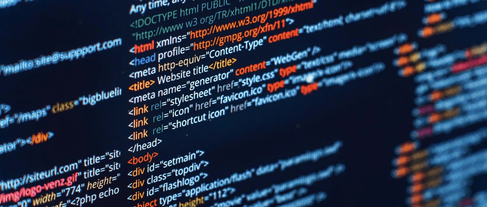

WEB DESIGN
Web design is the process of creating websites. It encompasses several different aspects, including webpage layout, content production, and graphic design. While the terms web design and web development are often used interchangeably, web design is technically a subset of the broader category of web development.
Websites are created using a markup language called HTML. Web designers build webpages using HTML tags that define the content and metadata of each page. The layout and appearance of the elements within a webpage are typically defined using CSS, or cascading style sheets. Therefore, most websites include a combination of HTML and CSS that defines how each page will appear in a browser.
Some web designers prefer to hand code pages (typing HTML and CSS from scratch), while others use a "WYSIWYG" editor like Adobe Dreamweaver. This type of editor provides a visual interface for designing the webpage layout and the software automatically generates the corresponding HTML and CSS code. Another popular way to design websites is with a content management system like WordPress or Joomla. These services provide different website templates that can be used as a starting point for a new website. Webmasters can then add content and customize the layout using a web-based interface.
While HTML and CSS are used to design the look and feel of a website, images must be created separately. Therefore, graphic design may overlap with web design, since graphic designers often create images for use on the Web. Some graphics programs like Adobe Photoshop even include a "Save for Web…" option that provides an easy way to export images in a format optimized for web publishing.